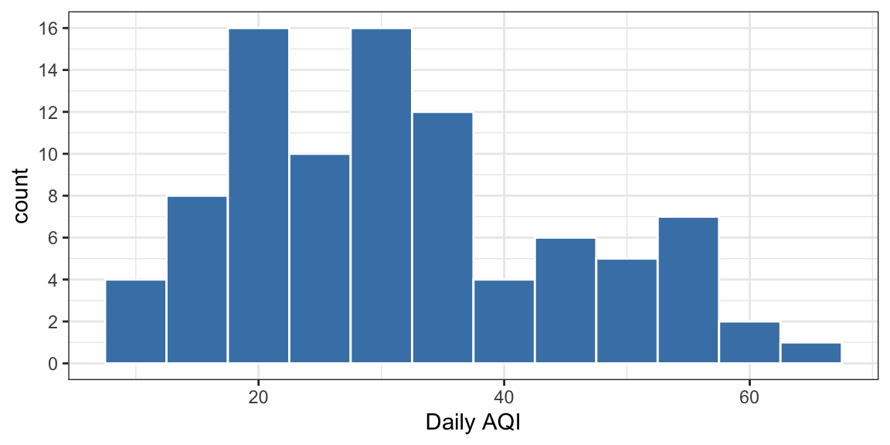
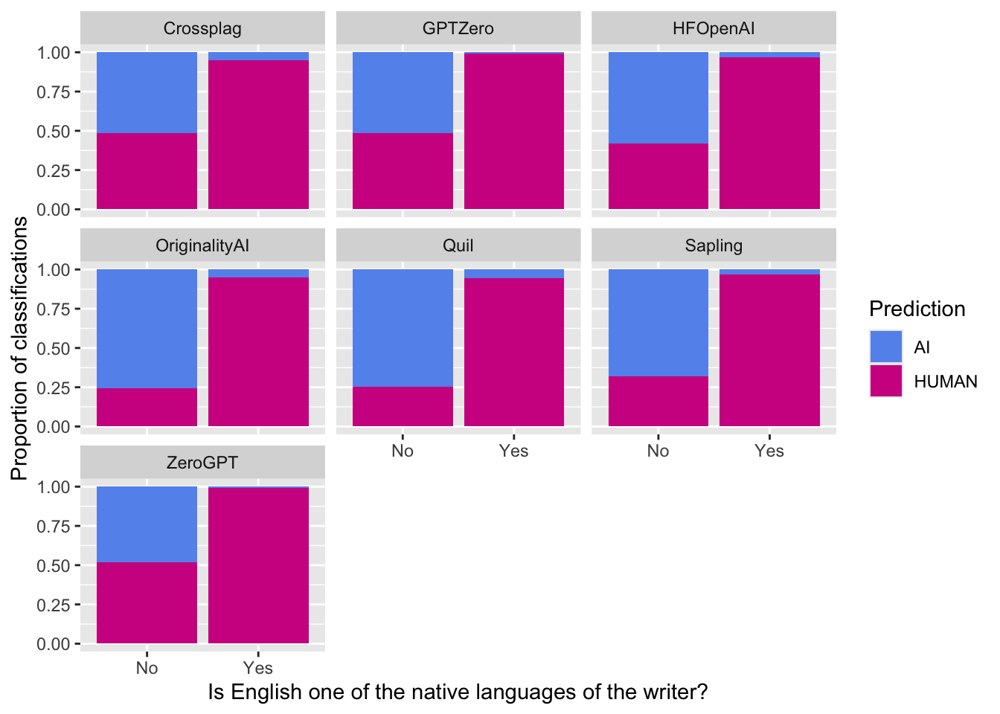
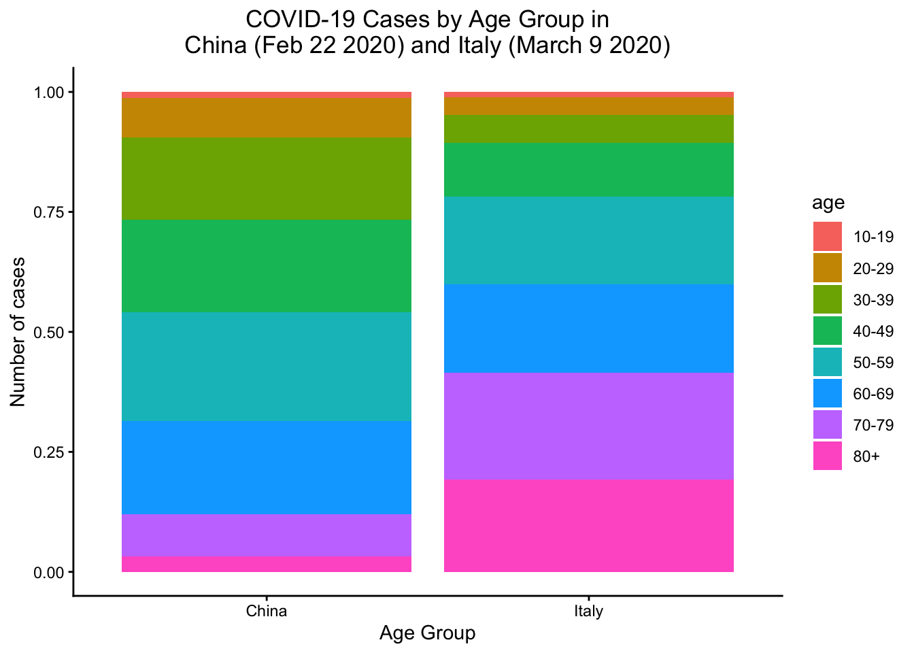

airline1 airline2 airline3
1 -60 0 -10
2 -45 0 -10
3 -30 5 -10
4 -15 5 -10
5 0 5 -10
6 0 5 -10
7 15 5 -10
8 30 5 -10
9 45 10 -10
10 60 10 90Homework 2
Math 141
Due: Friday, February 13th at 11:59pm on Gradescope as a PDF
In this homework assignment you will practice:
- Interpreting and analyzing data using summary statistics
- Reading code for data manipulation in
R - Computing and interpreting probabilities from contingency tables
Exercises
Exercise 1: Airline Delay
You’re shopping for a plane ticket and are deciding between three airlines that each have a flight to your destination and are all scheduled to leave at the same time and arrive at the same time. Below are the delays in arrival times (in minutes) for 10 flights from each of the three airlines (a negative number means the flight arrived early, 0 means the flight arrived exactly on time, a positive number means the flight arrived late):
Describe each airline’s delay record. What are their strengths? What are their weaknesses? Use summary statistic concepts to justify your response (you don’t need to calculate them exactly, though it may help).
Which airline would you choose? What characteristics of the airline most factored into your decision?
Exercise 2: AQI Summary Statistics
Daily air quality is measured by the air quality index (AQI) reported by the Environmental Protection Agency. This index reports the pollution level and what associated health effects might be a concern. The index is calculated for five major air pollutants regulated by the Clean Air Act and takes values from 0 to 300, where a higher value indicates lower air quality. AQI was reported for a sample of 91 days in 2011 in Durham, NC. The histogram below shows the distribution of the AQI values on these days.
library(openintro)
library(ggplot2)
ggplot(pm25_2011_durham, aes(x = daily_aqi_value))+
geom_histogram(binwidth = 5, color = "white", fill = "steelblue") +
scale_y_continuous(breaks = seq(0, 16, by = 2)) +
labs(x = "Daily AQI") +
theme_bw()
Estimate the median AQI value of this sample based on the graph.
Would you expect the mean AQI value of this sample to be higher or lower than the median? Explain your reasoning.
Estimate Q1, Q3, and IQR for the distribution based on the graph.
Using the estimates of Q1, Q3, and IQR from part (c), would any of the days in this sample be considered outliers? Explain!
Exercise 3: detectors Wrangling and Analysis
For this problem, let’s revisit the detectors dataset from the article “GPT Detectors Are Biased Against Non-Native English Writers”1.
- The code from the Magic section of the
intro.qmddocument has been adapted below. Give a line-by-line explanation of what the code does, using language accessible to someone who hasn’t had prior coding experience.
# Load libraries
library(detectors) # Grabs the data set
library(ggplot2) # For visualizations
library(dplyr) # For data wrangling
# Wrangle data
humans_only <- detectors %>%
filter(kind == "Human",
!is.na(native)) %>%
mutate(.pred_class = toupper(.pred_class))
# Graph data
ggplot(data = humans_only, mapping = aes(x = native, fill = .pred_class)) +
geom_bar(position = "fill") +
facet_wrap(~detector) +
labs(x = "Is English one of the native languages of the writer?",
y = "Proportion of classifications",
fill = "Prediction") +
scale_fill_manual(values = c("cornflowerblue", "violetred"))
- Among non-native English speakers, how likely is each detector to classify their writing as being AI generated? How about for the native English speakers? Use
Rto answer this question in the chunk below.
Hints:
- Your wrangled data frame should have 28 rows.
- Consider grouping on more than 1 variable.
- Run
print([your data frame name], n = 28)to display the whole table.
- From your graph in (a) and summary statistics in (b) draw two conclusions.
Exercise 4: Means, Medians, and Skewness
This question is from IMS Chapter 5.
The statistic \(\frac{\bar{x}}{median}\) can be used as a measure of skewness. Suppose we have a distribution where all observations are greater than 0. What do you expect the shape of the distribution to be under the following conditions? Explain your reasoning.
\(\frac{\bar{x}}{median} = 1\)
\(\frac{\bar{x}}{median} < 1\)
\(\frac{\bar{x}}{median} > 1\)
Exercise 5: COVID-19 Case Fatality Rates
For this exercise, we will use data from a 2021 paper published by IEEE, von Kugelgen J et al. 2021. This paper analyses case fatality rates of COVID-19 in Italy and China during 2020.
- Run the chunk below to view data on COVID-19 cases and fatalities by age group in Italy (on March 9th) and China (on February 22). Using R, calculate the case fatality rate (the proportion of cases that resulted in fatality) for each age group in each country. What do you notice when comparing rates between the two countries?
covid <- read.csv("data/italy_china_covid_comp.csv")
print(covid) country age cases fatalities
1 China 10-19 549 1
2 Italy 10-19 85 0
3 China 20-29 3619 7
4 Italy 20-29 296 0
5 China 30-39 7600 18
6 Italy 30-39 470 0
7 China 40-49 8571 38
8 Italy 40-49 891 1
9 China 50-59 10008 130
10 Italy 50-59 1453 3
11 China 60-69 8583 309
12 Italy 60-69 1471 37
13 China 70-79 3918 312
14 Italy 70-79 1785 114
15 China 80+ 1408 208
16 Italy 80+ 1532 202# Compute case fatality ratesEither using R, or by hand, calculate the overall case fatality rate within each country (not broken down by age). How do the overall case fatality rates compare between the two countries? Is this what you would expect based on part (a)?
These results are an example of Simpson’s Paradox, a phenomenon where trends observed in aggregate comparisons reverse when we control for other variables. Run the chunk below to look at a barplot showing the number of COVID-19 cases per age group. How does this help explain what you observed in parts (a) and (b)?
covid <- read.csv("data/italy_china_covid_comp.csv")
ggplot(covid, aes(x = country, y = cases, fill = age, label = cases)) +
geom_col(position = "fill") +
xlab("Age Group") +
ylab("Number of cases") +
ggtitle("COVID-19 Cases by Age Group in\nChina (Feb 22 2020) and Italy (March 9 2020)") +
theme_classic() +
theme(plot.title = element_text(hjust = 0.5))
Exercise 6: Some Interesting Survey Results
In a previous year, students in Math 141 were asked two questions as part of a larger survey: “Are hot dogs sandwiches?” and “If dogs wore pants, would they wear them on their front legs, back legs, or on all four legs”? A summary of responses for 70 students is given below:
| Hotdog is a sandwich | Hotdog is not a sandwich | |
|---|---|---|
| Front legs | 1 | 1 |
| Back legs | 17 | 26 |
| All 4 legs | 9 | 16 |
Suppose we randomly choose 1 student who completed this survey.
Are the events “the student thinks a hotdog is not a sandwich” and “the student thinks dogs should wear pants on their back legs” mutually exclusive?
What is the probability that the randomly chosen student thinks a hotdog is a sandwich?
What is the probability that the randomly chosen student thinks a hotdog is a sandwich and thinks that dogs should wear pants on all 4 legs?
What is the probability that the randomly chosen student thinks a hotdog is a sandwich given that the student thinks dogs should wear pants on all 4 legs?
Is the event “the student thinks a hotdog is a sandwich” independent (in the statistical sense) of the event “the student thinks dogs should wear pants on their front legs”? Explain your reasoning. Do your statistical findings match your intuition about whether these events are related?
Footnotes
GPT Detectors Are Biased Against Non-Native English Writers. Weixin Liang, Mert Yuksekgonul, Yining Mao, Eric Wu, James Zou. CellPress Patterns↩︎